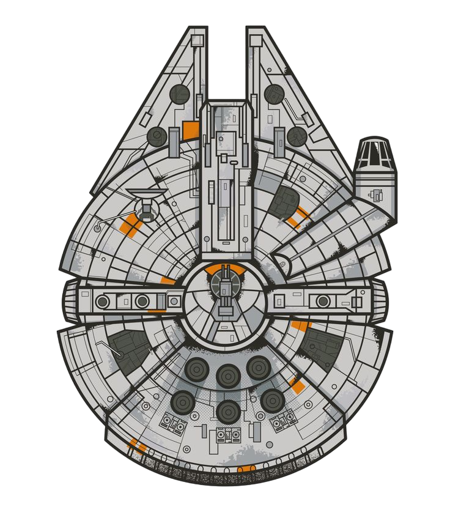

<router-outlet></router-outlet>

<button id="audio-button" (click)="toggleAudio()" data-aos="zoom-in-up">
  <i class="fa" [ngClass]="isPlaying ? 'bi-pause-circle' : 'bi-play-circle'"></i>

</button>
<audio #audioPlayer>
  <source src="../assets/audio/Kid Francescoli - _Moon_ (Official Video).mp3" type="audio/mpeg">
  Your browser does not support the audio element.
</audio>

<!-- Botón fijo con imagen -->
<div class="chat-icon-container" data-aos="zoom-in-up">
  <a href="https://www.stack-ai.com/chat-assistant/5e2826ce-2963-48e3-ab85-2465bbd7b5f5/c733b9ee-ef11-4d38-98a0-e0ce38231fb9/66872c12e45742192d1ef1a3" target="_blank">
    <!-- Ajusta la URL según sea necesario -->
    
  </a>
  <div class="chat-bubble">
    Tenemos un largo viaje por delante, <br> ¿te apetece charlar?
  </div>
</div>